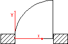
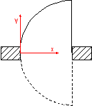
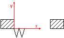
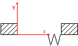
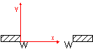
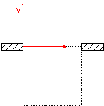
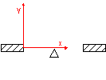

| Enumerator | Description | Figure |
|---|---|---|
|
SINGLE_SWING_LEFT |
Door with one
panel that opens (swings) to the
left. The hinges are on the left side as viewed in the direction of the
positive y-axis.Note Direction of swing (whether in or out) is determined at the IfcDoor. |
 |
|
SINGLE_SWING_RIGHT |
Door with one
panel that opens (swings) to the
right. The hinges are on the right side as viewed in the direction of
the positive y-axis.NOTE Direction of swing (whether in or out) is determined at the IfcDoor. |
 |
|
DOUBLE_DOOR_ |
Door with two
panels, one opens (swings) to the
left the other opens (swings) to the right.NOTE Direction of swing (whether in or out) is determined at the IfcDoor. |
 |
|
DOUBLE_SWING_LEFT |
Door with one
panel that swings in both
directions and to the left in the main trafic direction. Also called
double acting door.NOTE Direction of main swing (whether in or out) is determined at the IfcDoor. |
 |
|
DOUBLE_SWING_RIGHT |
Door with one
panel that swings in both
directions and to the right in the main trafic direction. Also called
double acting door.NOTE Direction of main swing (whether in or out) is determined at the IfcDoor. |
 |
|
DOUBLE_DOOR_ |
Door with two
panels, one swings in both
directions and to the right in the main trafic direction the other
swings also in both directions and to the left in the main trafic
direction.NOTE Direction of main swing (whether in or out) is determined at the IfcDoor. |
 |
|
DOUBLE_DOOR_ |
Door with two
panels that both open to the left,
one panel swings in one direction and the other panel swings in the
opposite direction.NOTE Direction of main swing (whether in or out) is determined at the IfcDoor. |
 |
| DOUBLE_DOOR_ SINGLE_SWING_ OPPOSITE_RIGHT |
Door with two
panels that both open to the right,
one panel swings in one direction and the other panel swings in the
opposite direction.NOTE Direction of main swing (whether in or out) is determined at the IfcDoor. |
 |
|
SLIDING_TO_LEFT |
Door with one panel that is sliding to the left. |  |
|
SLIDING_TO_RIGHT |
Door with one panel that is sliding to the right. |  |
|
DOUBLE_DOOR_SLIDING |
Door with two panels, one is sliding to the left the other is sliding to the right. |  |
|
FOLDING_TO_LEFT |
Door with one panel that is folding to the left. |  |
| FOLDING_TO_RIGHT | Door with one panel that is folding to the right. |  |
|
DOUBLE_DOOR_FOLDING |
Door with two panels, one is folding to the left the other is folding to the right. |  |
|
REVOLVING |
An entrance door consisting of four leaves set in a form of a cross and revolving around a central vertical axis (the four panels are described by a single IfcDoor panel property). |  |
|
ROLLINGUP |
Door that opens
by rolling up.NOTE Whether it rolls up to the inside or outside is determined at the IfcDoor. |
 |
| USERDEFINED | User defined operation type | |
| NOTDEFINED | A door with a not defined operation type is considered as a door with a lining, but no panels. It is thereby always open. |  |
Figure 252 — Door style operations
 EXPRESS-G diagram
EXPRESS-G diagram Link to this page
Link to this page